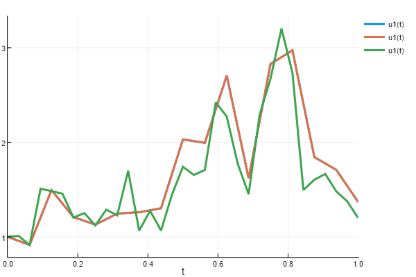
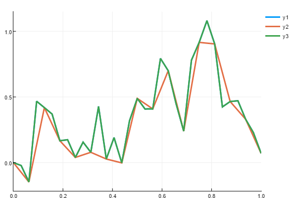
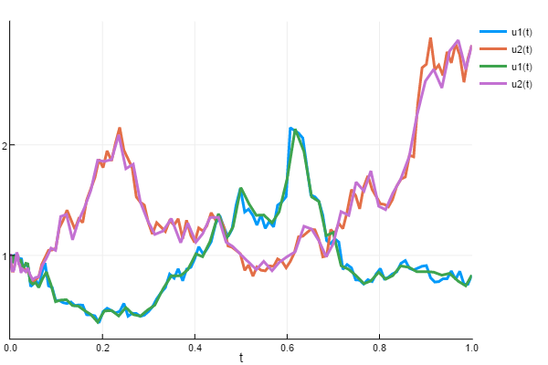

Noise Processes API
Core Types
DiffEqNoiseProcess.NoiseProcess — Type
NoiseProcess{T, N, Tt, T2, T3, ZType, F, F2, inplace, S1, S2, RSWM, C, RNGType} <:
{T, N, Vector{T2}, inplace}A NoiseProcess is a type defined as:
NoiseProcess(t0, W0, Z0, dist, bridge;
iip = SciMLBase.isinplace(dist, 3),
rswm = RSWM(), save_everystep = true,
rng = Random.default_rng(),
reset = true, reseed = true)t0is the first timepointW0is the first value of the process.Z0is the first value of the pseudo-process. This is necessary for higher order algorithms. If it's not needed, set tonothing.distthe distribution of the steps over time.bridgethe bridging distribution. Optional, but required for adaptivity and interpolating at new values.covarianceis the covariance matrix of the noise process. If not provided, the noise is assumed to be uncorrelated in each variable.save_everystepwhether to save every step of the Brownian timeseries.rngthe local RNG used for generating the random numbers.resetwhether to reset the process with each solve.reseedwhether to reseed the process with each solve.
The signature for the dist is:
dist!(rand_vec, dW, W, dt, u, p, t, rng)for inplace functions, and:
rand_vec = dist(dW, W, dt, u, p, t, rng)otherwise. The signature for bridge is:
bridge!(rand_vec, dW, W, W0, Wh, q, h, u, p, t, rng)and the out of place syntax is:
rand_vec = bridge(dW, W, W0, Wh, q, h, u, p, t, rng)Here, W is the noise process, W0 is the left side of the current interval, Wh is the right side of the current interval, h is the interval length, and q is the proportion from the left where the interpolation is occurring.
Direct Construction Example
The easiest way to show how to directly construct a NoiseProcess is by example. Here we will show how to directly construct a NoiseProcess which generates Gaussian white noise.
This is the noise process, that uses randn!. A special dispatch is added for complex numbers for (randn()+im*randn())/sqrt(2). This function is DiffEqNoiseProcess.wiener_randn (or with ! respectively).
The first function that must be defined is the noise distribution. This is how to generate $W(t+dt)$ given that we know $W(x)$ for $x∈[t₀,t]$. For Gaussian white noise, we know that
\[W(dt) ∼ N(0,dt)\]
for $W(0)=0$ which defines the stepping distribution. Thus, its noise distribution function is:
@inline function WHITE_NOISE_DIST(dW, W, dt, u, p, t, rng)
if W.dW isa AbstractArray && !(W.dW isa SArray)
return @fastmath sqrt(abs(dt)) * wiener_randn(rng, W.dW)
else
return @fastmath sqrt(abs(dt)) * wiener_randn(rng, typeof(W.dW))
end
endfor the out of place versions, and for the inplace versions
function INPLACE_WHITE_NOISE_DIST(rand_vec, dW, W, dt, u, p, t, rng)
wiener_randn!(rng, rand_vec)
sqrtabsdt = @fastmath sqrt(abs(dt))
@. rand_vec *= sqrtabsdt
endOptionally, we can provide a bridging distribution. This is the distribution of $W(qh)$ for $q∈[0,1]$ given that we know $W(0)=0$ and $W(h)=Wₕ$. For Brownian motion, this is known as the Brownian Bridge, and is well known to have the distribution:
\[W(qh) ∼ N(qWₕ,(1-q)qh)\]
Thus, we have the out-of-place and in-place versions as:
function WHITE_NOISE_BRIDGE(dW, W, W0, Wh, q, h, u, p, t, rng)
if W.dW isa AbstractArray
return @fastmath sqrt((1 - q) * q * abs(h)) * wiener_randn(rng, W.dW) + q * Wh
else
return @fastmath sqrt((1 - q) * q * abs(h)) * wiener_randn(rng, typeof(W.dW)) +
q * Wh
end
end
function INPLACE_WHITE_NOISE_BRIDGE(rand_vec, dW, W, W0, Wh, q, h, u, p, t, rng)
wiener_randn!(rng, rand_vec)
#rand_vec .= sqrt((1.-q).*q.*abs(h)).*rand_vec.+q.*Wh
sqrtcoeff = @fastmath sqrt((1 - q) * q * abs(h))
@. rand_vec = sqrtcoeff * rand_vec + q * Wh
endThese functions are then placed in a noise process:
NoiseProcess(t0, W0, Z0, WHITE_NOISE_DIST, WHITE_NOISE_BRIDGE; kwargs)
NoiseProcess(t0, W0, Z0, INPLACE_WHITE_NOISE_DIST, INPLACE_WHITE_NOISE_BRIDGE; kwargs)Notice that we can optionally provide an alternative adaptive algorithm for the timestepping rejections. RSWM() defaults to the Rejection Sampling with Memory 3 algorithm (RSwM3).
Note that the standard constructors are simply:
function WienerProcess(t0, W0, Z0 = nothing)
NoiseProcess(t0, W0, Z0, WHITE_NOISE_DIST, WHITE_NOISE_BRIDGE; kwargs)
end
function WienerProcess!(t0, W0, Z0 = nothing)
NoiseProcess(t0, W0, Z0, INPLACE_WHITE_NOISE_DIST, INPLACE_WHITE_NOISE_BRIDGE; kwargs)
endThese will generate a Wiener process, which can be stepped with step!(W,dt), and interpolated as W(t).
DiffEqNoiseProcess.SimpleNoiseProcess — Type
SimpleNoiseProcess{T, N, Tt, T2, T3, ZType, F, F2, inplace, RNGType} <:
AbstractNoiseProcess{T, N, Vector{T2}, inplace}Like NoiseProcess but without support for adaptivity. This makes it lightweight and slightly faster.
SimpleNoiseProcess should not be used with adaptive SDE solvers as it will lead to incorrect results.
SimpleNoiseProcess{iip}(t0, W0, Z0, dist, bridge;
save_everystep = true,
rng = Random.default_rng(),
reset = true, reseed = true) where {iip}t0is the first timepointW0is the first value of the process.Z0is the first value of the pseudo-process. This is necessary for higher order algorithms. If it's not needed, set tonothing.distthe distribution for the steps over time.bridgethe bridging distribution. Optional, but required for adaptivity and interpolating at new values.save_everystepwhether to save every step of the Brownian timeseries.rngthe local RNG used for generating the random numbers.resetwhether to reset the process with each solve.reseedwhether to reseed the process with each solve.
Wiener Processes
Standard Wiener Process
DiffEqNoiseProcess.WienerProcess — Function
The WienerProcess, also known as Brownian motion, or the noise in the Langevin equation, is the stationary process with white noise increments and a distribution N(0,dt). The constructor is:
WienerProcess(t0,W0,Z0=nothing;kwargs...)
WienerProcess!(t0,W0,Z0=nothing;kwargs...)DiffEqNoiseProcess.WienerProcess! — Function
The WienerProcess, also known as Brownian motion, or the noise in the Langevin equation, is the stationary process with white noise increments and a distribution N(0,dt). The constructor is:
WienerProcess(t0,W0,Z0=nothing;kwargs...)
WienerProcess!(t0,W0,Z0=nothing;kwargs...)DiffEqNoiseProcess.SimpleWienerProcess — Function
The SimpleWienerProcess, also known as Brownian motion, or the noise in the Langevin equation, is the stationary process with white noise increments and a distribution N(0,dt). The constructor is:
SimpleWienerProcess(t0,W0,Z0=nothing;kwargs...)
SimpleWienerProcess(t0,W0,Z0=nothing;kwargs...)Unlike WienerProcess, this uses the SimpleNoiseProcess and thus does not support adaptivity, but is slightly more lightweight.
DiffEqNoiseProcess.SimpleWienerProcess! — Function
The SimpleWienerProcess, also known as Brownian motion, or the noise in the Langevin equation, is the stationary process with white noise increments and a distribution N(0,dt). The constructor is:
SimpleWienerProcess(t0,W0,Z0=nothing;kwargs...)
SimpleWienerProcess(t0,W0,Z0=nothing;kwargs...)Unlike WienerProcess, this uses the SimpleNoiseProcess and thus does not support adaptivity, but is slightly more lightweight.
Real-Valued Wiener Process
DiffEqNoiseProcess.RealWienerProcess — Function
The RealWienerProcess is a Brownian motion that is forced to be real-valued. While the normal WienerProcess becomes complex valued if W0 is complex, this version is real valued for when you want to, for example, solve an SDE defined by complex numbers where the noise is in the reals.
RealWienerProcess(t0,W0,Z0=nothing;kwargs...)
RealWienerProcess!(t0,W0,Z0=nothing;kwargs...)DiffEqNoiseProcess.RealWienerProcess! — Function
The RealWienerProcess is a Brownian motion that is forced to be real-valued. While the normal WienerProcess becomes complex valued if W0 is complex, this version is real valued for when you want to, for example, solve an SDE defined by complex numbers where the noise is in the reals.
RealWienerProcess(t0,W0,Z0=nothing;kwargs...)
RealWienerProcess!(t0,W0,Z0=nothing;kwargs...)Correlated Wiener Process
DiffEqNoiseProcess.CorrelatedWienerProcess — Function
One can define a CorrelatedWienerProcess which is a Wiener process with correlations between the Wiener processes. The constructor is:
CorrelatedWienerProcess(Γ,t0,W0,Z0=nothing;kwargs...)
CorrelatedWienerProcess!(Γ,t0,W0,Z0=nothing;kwargs...)where Γ is the constant covariance matrix.
DiffEqNoiseProcess.CorrelatedWienerProcess! — Function
One can define a CorrelatedWienerProcess which is a Wiener process with correlations between the Wiener processes. The constructor is:
CorrelatedWienerProcess(Γ,t0,W0,Z0=nothing;kwargs...)
CorrelatedWienerProcess!(Γ,t0,W0,Z0=nothing;kwargs...)where Γ is the constant covariance matrix.
Geometric Brownian Motion
DiffEqNoiseProcess.GeometricBrownianMotionProcess — Function
A GeometricBrownianMotion process is a Wiener process with constant drift μ and constant diffusion σ. I.e. this is the solution of the stochastic differential equation
\[dX_t = \mu X_t dt + \sigma X_t dW_t\]
The GeometricBrownianMotionProcess is distribution exact (meaning, not a numerical solution of the stochastic differential equation, but instead follows the exact distribution properties). It can be back interpolated exactly as well. The constructor is:
GeometricBrownianMotionProcess(μ,σ,t0,W0,Z0=nothing;kwargs...)
GeometricBrownianMotionProcess!(μ,σ,t0,W0,Z0=nothing;kwargs...)DiffEqNoiseProcess.GeometricBrownianMotionProcess! — Function
A GeometricBrownianMotion process is a Wiener process with constant drift μ and constant diffusion σ. I.e. this is the solution of the stochastic differential equation
\[dX_t = \mu X_t dt + \sigma X_t dW_t\]
The GeometricBrownianMotionProcess is distribution exact (meaning, not a numerical solution of the stochastic differential equation, but instead follows the exact distribution properties). It can be back interpolated exactly as well. The constructor is:
GeometricBrownianMotionProcess(μ,σ,t0,W0,Z0=nothing;kwargs...)
GeometricBrownianMotionProcess!(μ,σ,t0,W0,Z0=nothing;kwargs...)Ornstein-Uhlenbeck Process
DiffEqNoiseProcess.OrnsteinUhlenbeckProcess — Function
a Ornstein-Uhlenbeck process, which is a Wiener process defined by the stochastic differential equation
\[dX_t = \theta (\mu - X_t) dt + \sigma dW_t\]
The OrnsteinUhlenbeckProcess is distribution exact (meaning, not a numerical solution of the stochastic differential equation, but instead follows the exact distribution properties). The constructor is:
OrnsteinUhlenbeckProcess(Θ,μ,σ,t0,W0,Z0=nothing;kwargs...)
OrnsteinUhlenbeckProcess!(Θ,μ,σ,t0,W0,Z0=nothing;kwargs...)DiffEqNoiseProcess.OrnsteinUhlenbeckProcess! — Function
A Ornstein-Uhlenbeck process, which is a Wiener process defined by the stochastic differential equation
\[dX_t = \theta (\mu - X_t) dt + \sigma dW_t\]
The OrnsteinUhlenbeckProcess is distribution exact (meaning, not a numerical solution of the stochastic differential equation, but instead follows the exact distribution properties). The constructor is:
OrnsteinUhlenbeckProcess(Θ,μ,σ,t0,W0,Z0=nothing;kwargs...)
OrnsteinUhlenbeckProcess!(Θ,μ,σ,t0,W0,Z0=nothing;kwargs...)Jump Processes
DiffEqNoiseProcess.CompoundPoissonProcess — Type
CompoundPoissonProcess{R, CR}A compound Poisson process for modeling jump processes.
The process has jumps that occur according to a Poisson process with given rate, and jump sizes determined by a specified distribution.
Fields
rate: Jump rate function or constant (λ parameter)currate: Current rate value (cached for efficiency)computerates: Whether to recompute rates at each step
Constructor
CompoundPoissonProcess(rate, t0, W0; computerates = true, rswm = RSWM(adaptivealg = :RSwM0), kwargs...)Keyword Arguments
computerates: Iftrue, recompute rates at each step (for state-dependent rates)rswm: RSWM algorithm configuration. Defaults to:RSwM0(no memory) which is appropriate for state-dependent rates. UseRSWM(adaptivealg = :RSwM3)for constant-rate processes if memory reuse is desired.
Why :RSwM0 is the Default
For tau-leaping with state-dependent rates, the rate λ is approximated as constant over each step. When a step is rejected, storing the "future" portion doesn't make sense because you don't know the correct λ anyway - it's always an approximation. Recalculating fresh is more appropriate for this use case than reusing values generated with the wrong rate.
Examples
# Constant rate
proc = CompoundPoissonProcess(2.0, 0.0, 0.0)
# State-dependent rate (default RSwM0 is appropriate)
rate_func(u, p, t) = 1.0 + 0.5*sin(t)
proc = CompoundPoissonProcess(rate_func, 0.0, 0.0)
# Constant rate with memory reuse (optional optimization)
proc = CompoundPoissonProcess(2.0, 0.0, 0.0; rswm = RSWM(adaptivealg = :RSwM3))References
https://www.math.wisc.edu/~anderson/papers/AndPostleap.pdf Incorporating postleap checks in tau-leaping J. Chem. Phys. 128, 054103 (2008); https://doi.org/10.1063/1.2819665
DiffEqNoiseProcess.CompoundPoissonProcess! — Type
CompoundPoissonProcess!{R, CR}In-place version of CompoundPoissonProcess.
See CompoundPoissonProcess for details.
Constructor
CompoundPoissonProcess!(rate, t0, W0; computerates = true, rswm = RSWM(adaptivealg = :RSwM0), kwargs...)Keyword Arguments
computerates: Iftrue, recompute rates at each step (for state-dependent rates)rswm: RSWM algorithm configuration. Defaults to:RSwM0(no memory) which is appropriate for state-dependent rates.
Bridge Processes
DiffEqNoiseProcess.BrownianBridge — Function
A BrownianBridge process is a Wiener process with a pre-defined start and end value. This process is distribution exact and back be back interpolated exactly as well. The constructor is:
BrownianBridge(t0,tend,W0,Wend,Z0=nothing,Zend=nothing;kwargs...)
BrownianBridge!(t0,tend,W0,Wend,Z0=nothing,Zend=nothing;kwargs...)where W(t0)=W₀, W(tend)=Wend, and likewise for the Z process if defined.
DiffEqNoiseProcess.BrownianBridge! — Function
A BrownianBridge process is a Wiener process with a pre-defined start and end value. This process is distribution exact and back be back interpolated exactly as well. The constructor is:
BrownianBridge(t0,tend,W0,Wend,Z0=nothing,Zend=nothing;kwargs...)
BrownianBridge!(t0,tend,W0,Wend,Z0=nothing,Zend=nothing;kwargs...)where W(t0)=W₀, W(tend)=Wend, and likewise for the Z process if defined.
DiffEqNoiseProcess.GeometricBrownianBridge — Function
A GeometricBrownianBridge is a geometric Brownian motion process with pre-defined start and end values.
This creates a GBM process that is conditioned to pass through specific values at the beginning and end of the time interval, useful for financial modeling where asset prices must match observed values.
Arguments
μ: Drift parameterσ: Volatility parametert0: Starting timetend: Ending timeW0: Starting value W(t0)Wend: Ending value W(tend)Z0,Zend: Optional auxiliary process values
Examples
# Stock price bridge from $100 to $110 over 1 year
bridge = GeometricBrownianBridge(0.05, 0.2, 0.0, 1.0, 100.0, 110.0)DiffEqNoiseProcess.GeometricBrownianBridge! — Function
In-place version of GeometricBrownianBridge.
See GeometricBrownianBridge for details.
DiffEqNoiseProcess.OrnsteinUhlenbeckBridge — Function
An OrnsteinUhlenbeckBridge is an Ornstein-Uhlenbeck process with pre-defined start and end values.
This creates a mean-reverting process that is conditioned to pass through specific values at the beginning and end of the time interval.
Arguments
Θ: Mean reversion rateμ: Long-term meanσ: Volatility parametert0: Starting timetend: Ending timeW0: Starting value W(t0)Wend: Ending value W(tend)Z0: Optional auxiliary process value
Examples
# Mean-reverting process from 1.0 to 0.5 over unit time
bridge = OrnsteinUhlenbeckBridge(2.0, 0.0, 0.3, 0.0, 1.0, 1.0, 0.5)DiffEqNoiseProcess.OrnsteinUhlenbeckBridge! — Function
In-place version of OrnsteinUhlenbeckBridge.
See OrnsteinUhlenbeckBridge for details.
DiffEqNoiseProcess.CompoundPoissonBridge — Function
A CompoundPoissonBridge is a compound Poisson process with pre-defined start and end values.
This creates a jump process that is conditioned to have specific values at the beginning and end of the time interval. The jumps are distributed to satisfy the endpoint constraint.
Arguments
rate: Jump rate (λ parameter)t0: Starting timetend: Ending timeW0: Starting value W(t0)Wend: Ending value W(tend)
Examples
# Jump process from 0 to 5 over unit time with rate 2.0
bridge = CompoundPoissonBridge(2.0, 0.0, 1.0, 0.0, 5.0)DiffEqNoiseProcess.CompoundPoissonBridge! — Function
In-place version of CompoundPoissonBridge.
See CompoundPoissonBridge for details.
Advanced Noise Types
Noise Wrapper
DiffEqNoiseProcess.NoiseWrapper — Type
NoiseWrapper{T, N, Tt, T2, T3, T4, ZType, inplace} <:
AbstractNoiseProcess{T, N, Vector{T2}, inplace}This produces a new noise process from an old one, which will use its interpolation to generate the noise. This allows you to reuse a previous noise process not just with the same timesteps, but also with new (adaptive) timesteps as well. Thus this is very good for doing Multi-level Monte Carlo schemes and strong convergence testing.
Constructor
NoiseWrapper(source::AbstractNoiseProcess{T, N, Vector{T2}, inplace};
reset = true, reverse = false, indx = nothing) where {T, N, T2, inplace}NoiseWrapper Example
In this example, we will solve an SDE three times:
- First, to generate a noise process
- Second, with the same timesteps to show the values are the same
- Third, with half-sized timesteps
First, we will generate a noise process by solving an SDE:
using StochasticDiffEq, DiffEqNoiseProcess
f1(u, p, t) = 1.01u
g1(u, p, t) = 1.01u
dt = 1 // 2^(4)
prob1 = SDEProblem(f1, g1, 1.0, (0.0, 1.0))
sol1 = solve(prob1, EM(), dt = dt, save_noise = true)Now we wrap the noise into a NoiseWrapper and solve the same problem:
W2 = NoiseWrapper(sol1.W)
prob1 = SDEProblem(f1, g1, 1.0, (0.0, 1.0), noise = W2)
sol2 = solve(prob1, EM(), dt = dt)We can test
@test sol1.u ≈ sol2.uto see that the values are essentially equal. Now we can use the same process to solve the same trajectory with a smaller dt:
W3 = NoiseWrapper(sol1.W)
prob2 = SDEProblem(f1, g1, 1.0, (0.0, 1.0), noise = W3)
dt = 1 // 2^(5)
sol3 = solve(prob2, EM(), dt = dt)We can plot the results to see what this looks like:
using Plots
plot(sol1)
plot!(sol2)
plot!(sol3)
In this plot, sol2 covers up sol1 because they hit essentially the same values. You can see that sol3 is similar to the others, because it's using the same underlying noise process, just sampled much finer.
To double-check, we see that:
plot(sol1.W)
plot!(sol2.W)
plot!(sol3.W)
the coupled Wiener processes coincide at every other time point, and the intermediate timepoints were calculated according to a Brownian bridge.
Adaptive NoiseWrapper Example
Here we will show that the same noise can be used with the adaptive methods using the NoiseWrapper. SRI and SRIW1 use slightly different error estimators, and thus have slightly different stepping behavior. We can see how they solve the same 2D SDE differently by using the noise wrapper:
prob = SDEProblem(f1, g1, ones(2), (0.0, 1.0))
sol4 = solve(prob, SRI(), abstol = 1e-8, save_noise = true)
W2 = NoiseWrapper(sol4.W)
prob2 = SDEProblem(f1, g1, ones(2), (0.0, 1.0), noise = W2)
sol5 = solve(prob2, SRIW1(), abstol = 1e-8)
using Plots
plot(sol4)
plot!(sol5)
Noise Functions
DiffEqNoiseProcess.NoiseFunction — Type
NoiseFunction{T, N, wType, zType, Tt, T2, T3, inplace} <:
AbstractNoiseProcess{T, N, nothing, inplace}This allows you to use any arbitrary function W(t) as a NoiseProcess. This will use the function lazily, only caching values required to minimize function calls, but not storing the entire noise array. This requires an initial time point t0 in the domain of W. A second function is needed if the desired SDE algorithm requires multiple processes.
NoiseFunction{iip}(t0, W, Z = nothing;
noise_prototype = W(nothing, nothing, t0),
reset = true) where {iip}Additionally, one can use an in-place function W(out1,out2,t) for more efficient generation of the arrays for mulitidimensional processes. When the in-place version is used without a dispatch for the out-of-place version, the noise_prototype needs to be set.
NoiseFunction Example
The NoiseFunction is pretty simple: pass a function. As a silly example, we can use exp as a noise process by doing:
f(u, p, t) = exp(t)
W = NoiseFunction(0.0, f)If it's mulitidimensional and an in-place function is used, the noise_prototype must be given. For example:
f(out, u, p, t) = (out .= exp(t))
W = NoiseFunction(0.0, f, noise_prototype = rand(4))This allows you to put arbitrarily weird noise into SDEs and RODEs. Have fun.
DiffEqNoiseProcess.NoiseTransport — Type
NoiseTransport{T, N, wType, zType, Tt, T2, T3, TRV, Trv, RNGType, inplace} <:
AbstractNoiseProcess{T, N, nothing, inplace}This allows you to define stochastic processes of the form W(t) = f(u, p, t, RV), where f is a function and RV represents a random variable. This will use the function lazily, only caching values required to minimize function calls, but not storing the entire noise array. This requires an initial time point t0 in the domain of W. A second function is needed if the desired SDE algorithm requires multiple processes.
NoiseTransport{iip}(t0,
W,
RV,
rv,
Z = nothing;
rng = Random.default_rng(),
reset = true,
reseed = true,
noise_prototype = W(nothing, nothing, t0, rv)) where {iip}NoiseTransport(t0,
W,
RV;
rng = Random.default_rng(),
reset = true,
reseed = true,
kwargs...)Additionally, one can use an in-place function W(out, u, p, t, rv) for more efficient generation of the arrays for mulitidimensional processes. When the in-place version is used without a dispatch for the out-of-place version, the noise_prototype needs to be set.
NoiseTransport Example
The NoiseTransport requires you to pass an initial time, a transport function, and a random variable. The random variable can be either out-of-place or in-place. It is assumed it is out-of-place when the realization is a subtype of Number, and in-place, when it is a subtype of AbstractArray. Here, a random variable is any function that accepts a random number generator, in the out-of-place case (e.g. rand(rng)), or a random number generator and a realization to be mutated (e.g. rand!(rng, rv)).
An optional realization rv may be given. The realization rv is used in the first time an AbstractRODEProblem is solved. Subsequent runs of the same problem will draw a different realization from the random variable RV, unless reseed is set to false. In the case of a NoiseProblem, however, a new realization will happen at the first run already, and, in this case, rv can be regarded as a realization prototype, which is necessary in the case of a random vector.
As a first example, let us implement the Gaussian noise W(t) = sin(Yt), where Y is a normal random variable.
f(u, p, t, rv) = sin(rv * t)
t0 = 0.0
W = NoiseTransport(t0, f, randn)If we want to build a scalar random process out of a random vector, then an in-place version of the random vector is required, as follows. We can also use parameters in the transport function, in which case the noise_prototype must be given.
using Random: randn!
f(u, p, t, rv) = sin(p[1] * t + rv[1]) + cos(p[2] * t + rv[2])
t0 = 0.0
rv = randn(2)
p = (π, 2π)
W = NoiseTransport(t0, f, randn!, rv, noise_prototype = f(nothing, p, t0, rv))If the random process is expected to be mulitidimensional, it is preferable to use an in-place transport function, and, in this case, the noise_prototype must be given. Here is an example with a scalar random vector with a beta distribution, from Distributions.jl.
f!(out, u, p, t, rv) = (out .= sin.(rv * t))
t0 = 0.0
RV(rng) = rand(rng, Beta(2, 3))
rv = 0.0
W = NoiseTransport(t0, f!, RV, rv, noise_prototype = zeros(4))We can also have a random vector with a mulitidimensional process, in which case an in-place version of RV is required. For example.
using Random: randn!
function f!(out, u, p, t, v)
out[1] = sin(v[1] * t)
out[2] = sin(t + v[2])
out[3] = cos(t) * v[1] + sin(t) * v[2]
nothing
end
t0 = 0.0
RV!(rng, v) = (v[1] = randn(rng); v[2] = rand(rng))
rv = zeros(2)
W = NoiseTransport(t0, f!, RV!, rv, noise_prototype = zeros(3))A NoiseTransport can be used as driving noise for SDEs and RODEs. Have fun!
Noise from Data
DiffEqNoiseProcess.NoiseGrid — Type
A noise grid builds a noise process from arrays of points. For example, you can generate your desired noise process as an array W with timepoints t, and use the constructor:
NoiseGrid(t, W, Z = nothing; reset = true)to build the associated noise process. This process comes with a linear interpolation of the given points, and thus the grid does not have to match the grid of integration. Thus, this can be used for adaptive solutions as well. However, one must take note that the fidelity of the noise process is linked to how fine the noise grid is determined: if the noise grid is sparse on points compared to the integration, then its distributional properties may be slightly perturbed by the linear interpolation. Thus, it's suggested that the grid size at least approximates the number of time steps in the integration to ensure accuracy.
For a one-dimensional process, W should be an AbstractVector of Numbers. For mulitidimensional processes, W should be an AbstractVector of the noise_prototype.
NoiseGrid
In this example, we will show you how to define your own version of Brownian motion using an array of pre-calculated points. In normal usage, you should use WienerProcess instead, since this will have distributionally-exact interpolations while the noise grid uses linear interpolations, but this is a nice example of the workflow.
To define a NoiseGrid you need to have a set of time points and a set of values for the process. Let's define a Brownian motion on (0.0,1.0) with a dt=0.001. To do this,
dt = 0.001
t = 0:dt:1
brownian_values = cumsum([0; [sqrt(dt) * randn() for i in 1:(length(t) - 1)]])Now we build the NoiseGrid using these values:
W = NoiseGrid(t, brownian_values)We can then pass W as the noise argument of an SDEProblem to use it in an SDE.
Noise Approximation
DiffEqNoiseProcess.NoiseApproximation — Type
In many cases, one would like to define a noise process directly by a stochastic differential equation which does not have an analytical solution. Of course, this will not be distributionally-exact and how well the properties match depends on how well the differential equation is integrated, but in many cases , this can be used as a good approximation when other methods are much more difficult.
A NoiseApproximation is defined by a DEIntegrator. The constructor for a NoiseApproximation is:
NoiseApproximation(source1::DEIntegrator,
source2::Union{DEIntegrator, Nothing} = nothing;
reset = true)The DEIntegrator should have a final time point of integration far enough away, such that it will not halt during the integration. For ease of use, you can use a final time point as Inf. Note that the time points do not have to match the time points of the future integration, since the interpolant of the SDE solution will be used. Thus, the limiting factor is error tolerance, and not hitting specific points.
NoiseApproximation Example
In this example, we will show how to use the NoiseApproximation to build our own Geometric Brownian Motion from its stochastic differential equation definition. In normal usage, you should use the GeometricBrownianMotionProcess instead since that is more efficient and distributionally-exact.
First, let's define the SDEProblem. Here, we use a timespan (0.0,Inf) so that the noise can be used over an indefinite integral.
const μ = 1.5
const σ = 1.2
f(u, p, t) = μ * u
g(u, p, t) = σ * u
prob = SDEProblem(f, g, 1.0, (0.0, Inf))Now we build the noise process by building the integrator and sending that integrator to the NoiseApproximation constructor:
integrator = init(prob, SRIW1())
W = NoiseApproximation(integrator)We can use this noise process like any other noise process. For example, we can now build a geometric Brownian motion whose noise process is colored noise that itself is a geometric Brownian motion:
prob = SDEProblem(f, g, 1.0, (0.0, Inf), noise = W)The possibilities are endless.
Memory-Efficient Alternatives
DiffEqNoiseProcess.VirtualBrownianTree — Type
A VirtualBrownianTree builds the noise process starting from an initial time t0, the first value of the process W0, and (optionally) the first value Z0 for an auxiliary pseudo-process. The constructor is given as
VirtualBrownianTree(t0,
W0,
Z0 = nothing,
dist = WHITE_NOISE_DIST,
bridge = VBT_BRIDGE;
kwargs...)where dist specifies the distribution that is used to generate the end point(s) Wend (Zend) of the noise process for the final time tend. bridge denotes the distribution of the employed Brownian bridge. Per default tend is fixed to t0+1 but can be changed by passing a custom tend as a keyword argument. The following keyword arguments are available:
tendis the end time of the noise process.Wendis the end value of the noise process.Zendis the end value of the pseudo-noise process.atolrepresents the absolute tolerance determining when the recursion is terminated.tree_depthallows one to store a cache of seeds, noise values, and times to speed up the simulation by reducing the recursion steps.search_depthmaximal search depth for the tree ifatolis not reached.rngthe splittable PRNG used for generating the random numbers. Default:Xoshiro()from the Random package.
VirtualBrownianTree Example
In this example, we define a mulitidimensional Brownian process based on a VirtualBrownianTree with a minimal tree_depth=0 such that memory consumption is minimized.
W0 = zeros(10)
W = VirtualBrownianTree(0.0, W0; tree_depth = 0)
prob = NoiseProblem(W, (0.0, 1.0))
sol = solve(prob; dt = 1 / 10)Using a look-up cache by increasing tree_depth can significantly reduce the runtime. Thus, the VirtualBrownianTree allows for trading off speed for memory in a simple manner.
DiffEqNoiseProcess.VirtualBrownianTree! — Function
VirtualBrownianTree!(t0, W0, Z0 = nothing,
dist = INPLACE_WHITE_NOISE_DIST, bridge = INPLACE_VBT_BRIDGE; kwargs...)Construct an in-place VirtualBrownianTree noise process.
This is the mutating-distribution variant of VirtualBrownianTree. It uses dist and bridge functions that write noise increments into their output argument, which is useful when W0 is an array-like noise prototype.
DiffEqNoiseProcess.BoxWedgeTail — Type
BoxWedgeTail{T, N, Tt, TA, T2, T3, ZType, F, F2, inplace, RNGType, tolType, spacingType,
jpdfType, boxType, wedgeType, tailType, distBWTType, distΠType} <:
AbstractNoiseProcess{T, N, Vector{T2}, inplace}The method for random generation of stochastic area integrals due to Gaines and Lyons. The method is based on Marsaglia's "rectangle-wedge-tail" approach for two dimensions.
3 different groupings for the boxes are implemented.
- box_grouping = :Columns (full, i.e., as large as possible, columns on a square spanned by dr and da)
- box_grouping = :none (no grouping)
- box_grouping = :MinEntropy (default, grouping that achieves a smaller entropy than the column wise grouping and thus allows for slightly faster sampling – but has a slightly larger number of groups)
The sampling is based on the Distributions.jl package, i.e., to sample from one of the many distributions, a uni-/bi-variate distribution from Distributions.jl is constructed, and then rand(..) is used.
Constructor
BoxWedgeTail{iip}(t0, W0, Z0, dist, bridge;
rtol = 1e-8, nr = 4, na = 4, nz = 10,
box_grouping = :MinEntropy,
sqeezing = true,
save_everystep = true,
rng = Random.default_rng(),
reset = true, reseed = true) where {iip}DiffEqNoiseProcess.BoxWedgeTail! — Function
BoxWedgeTail!(t0, W0, Z0 = nothing,
dist = INPLACE_WHITE_NOISE_DIST, bridge = INPLACE_WHITE_NOISE_BRIDGE; kwargs...)Construct an in-place BoxWedgeTail noise process.
This is the mutating-distribution variant of BoxWedgeTail for two-dimensional Brownian processes with stochastic area. The supplied dist and bridge functions must write their increments into the provided output arrays.
Preconditioned Crank-Nicolson
DiffEqNoiseProcess.pCN — Function
pCN(noise::AbstractNoiseProcess, ρ; reset=true,reverse=false,indx=nothing)Create a new, but correlated noise process from noise and additional entropy with correlation ρ.
pCN(noise::NoiseGrid, ρ; reset=true, rng = Random.default_rng())Create a new, but correlated noise process from noise and additional entropy with correlation ρ. This update defines an autoregressive process in the space of Wiener (or noise process) trajectories, which can be used as proposal distribution in Metropolis-Hastings algorithms (often called the "preconditioned Crank–Nicolson scheme".)
External links
DiffEqNoiseProcess.pCN! — Function
pCN!(noise::AbstractNoiseProcess, ρ; reset=true,reverse=false,indx=nothing)Create a new, but correlated noise process from noise and additional entropy with correlation ρ. This update defines an autoregressive process in the space of Wiener (or noise process) trajectories, which can be used as proposal distribution in Metropolis-Hastings algorithms (often called the "preconditioned Crank–Nicolson scheme".)
External links